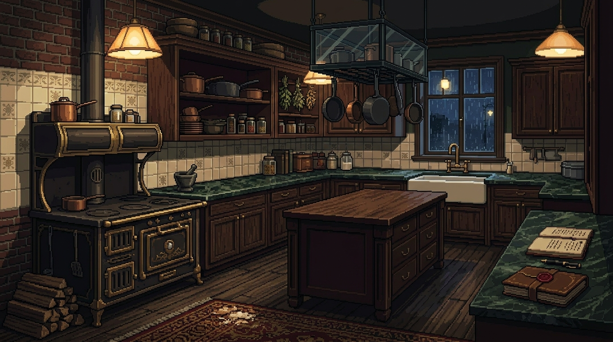

PAREDE DE EVIDÊNCIAS - CASO RAVENWOOD
Conecte os pontos, cruze os depoimentos dos suspeitos e prepare-se para apontar o verdadeiro culpado.
⚠️ Vanessa Ravenwood (Filha)

Álibi: Disse que estava dormindo no quarto e não ouviu nada na noite do crime.
"EU QUERIA AQUELA MULHER MORTA! ... Eu jamais teria um livro de ervas medicinais."
🧳 Thomas Ravenwood (Sobrinho)

Álibi: Bebia na sala e discutiu com o tio por dinheiro às 23:30. Deixou o relógio cair.
"Tivemos uma discussão acalorada, talvez eu tenha deixado o relógio cair, mas não o matei."
📜 Dr. Valentine (Advogado)

Depoimento: Confirmou a alteração do testamento para adicionar Elena Austen como herdeira.
"Edmund planejava adicionar mais uma pessoa ao testamento... pretendia pedir Elena em casamento."
🗝️ Elena Austen (Empregada)

Depoimento: Preparou o café da noite e notou que já havia uma xícara na cozinha.
"As xícaras eram iguais e talvez eu tenha me confundido... SERÁ QUE HAVIA ALGO NAQUELE COPO?"
☕ Evidências da Mansão

Local do Crime: Xícara com odor químico forte, frasco sem rótulo na lixeira da cozinha e minutas financeiras na sala de reunião.
"O chá foi envenenado com extrato de beladona letal administrado na hora certa."